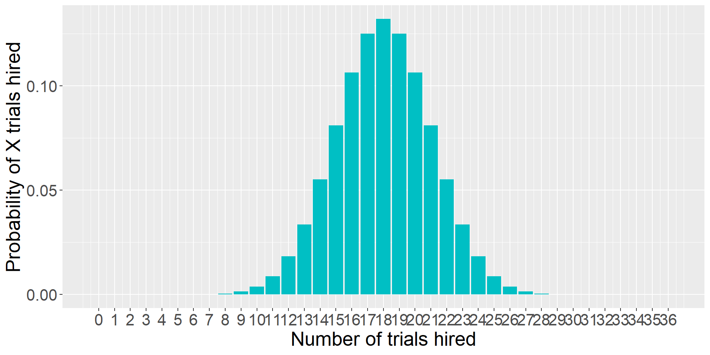

Sample statistics are biased estimates of the population
Can construct confidence intervals around our sample statistics
We use (so far) the normal distribution & the t-distribution
Up Next…Hypothesis testing!
Hypothesis
What is a hypothesis?
In statistics, a hypothesis is a statement about the population. It is usually a prediction that a parameter describing some characteristic of a variable takes a particular numerical value, or falls into a certain range of values.
Hypothesis
For example, dogs are characterized by their ability to read humans’ social cues, but it is (was) unknown whether that skill is biologically prepared. I might hypothesize that when a human points to a hidden treat, puppies do not understand that social cue and their performance on a related task is at-chance. We would call this a research hypothesis.
This could be represented numerically as, as a statistical hypothesis:
In Null Hypothesis Significance Testing, we… test a null hypothesis.
A null hypothesis ( \(H_0\) ) is a statement of no effect. The research hypothesis states that there is no relationship between X and Y, or our intervention has no effect on the outcome.
The statistical hypothesis is either that the population parameter is a single value, like 0, or that a range, like 0 or smaller.
The alternative hypothesis
According to probability theory, our sample space must cover all possible elementary events. Therefore, we create an alternative hypothesis ( \(H_1\) ) that is every possible event not represented by our null hypothesis.
\[H_0: \mu = 4\]\[H_1: \mu \neq 4\]
\[H_0: \mu \leq -7\]\[H_1: \mu > -7\]
The tortured logic of NHST
We create two hypotheses, \(H_0\) and \(H_1\). Usually, we care about \(H_1\), not \(H_0\). In fact, what we really want to know is how likely \(H_1\), given our data.
\[P(H_1|Data)\] Instead, we’re going to test our null hypothesis. Well, not really. We’re going to assume our null hypothesis is true, and test how likely we would be to get these data.
\[P(Data|H_0)\]
Example #1
Consider the example of puppies’ abilities to read human social cues.
Let \(\Pi\) be the probability the puppy chooses the correct cup that a person points to.
In a task with two choices, an at-chance performance is \(\Pi = .5\). This can be the null hypothesis because if this is true, than puppies would make the correct choice as often as they would make an incorrect choice.
Note that the null hypothesis changes depending on the situation and research question.
Example #1 - Hypotheses
As a dog-lover, you’re skeptical that reading human social cues is purely learned, and you have an alternative hypothesis that puppies will perform well over chance, thus having a probability of success on any given task greater than .5.
\[H_0: \Pi = .5\]\[H_1: \Pi \neq .5\]
Example #1
To test the null hypothesis, you a single puppy and test them 12 times on a pointing task. The puppy makes the correct choice 10 times.
The question you’re going to ask is:
“How likely is it that the puppy is successful 10 times out of 12, if the probability of success is .5?”
This is the essence of NHST.
You can already test this using what you know about the binomial distribution.
Code
trial =0:12data.frame(trial = trial, d =dbinom(trial, size =12, prob = .5), color =ifelse(trial ==10, "1", "2")) %>%ggplot(aes(x = trial, y = d, fill = color)) +geom_bar(stat ="identity") +guides(fill ="none")+scale_x_continuous("Number of puppy successes", breaks =c(0:12))+scale_y_continuous("Probability of X successes") +theme(text =element_text(size =20))
dbinom(10, size =12, prob = .5)
[1] 0.01611328
Complications with the binomial
The likelihood of the puppy being successful 10 times out of 12 if the true probability of success is .5 is 0.02. That’s pretty low! That’s so low that we might begin to suspect that the true probability is not .5.
But there’s a problem with this example. The real study used a sample of many puppies (>300), and the average number of correct trials per puppy was about 8.33. But the binomial won’t allow us to calculate the probability of fractional successes!
What we really want is not to assess 10 out of 12 times, but a proportion, like .694. How many different proportions could result puppy to puppy?
Our statistic is usually continuous
When we estimate a statistic for our sample – like the proportion of puppy success, or the average IQ score, or the relationship between age in months and second attending to a new object – that statistic is nearly always continuous. So we have to assess the probability of that statistic using a probability distribution for continuous variables, like the normal distribution. (Or t, or F, or \(\chi^2\) ).
What is the probability of any value in a continuous distribution?
Instead of calculating the probability of our statistic, we calculate the probability of our statistic or more extreme under the null.
The probability of success on 10 trials out of 12 or more extreme is 0.01.
Code
data.frame(trials = trial, d =dbinom(trial, size =12, prob = .5), color =ifelse(trial %in%c(0,1,2, 10,11,12), "1", "2")) %>%ggplot(aes(x = trials, y = d, fill = color)) +geom_bar(stat ="identity") +guides(fill ="none")+scale_x_continuous("Number of successes", breaks =c(0:12))+scale_y_continuous("Probability of X successes") +theme(text =element_text(size =20))
As we have more trials…
Code
data.frame(trials =0:24, d =dbinom(0:24, size =24, prob = .5), color =ifelse(0:24%in%c(0:4, 20:24), "1", "2")) %>%ggplot(aes(x = trials, y = d, fill = color)) +geom_bar(stat ="identity") +guides(fill ="none")+scale_x_continuous("Number of trials hired", breaks =c(0:24))+scale_y_continuous("Probability of X trials hired") +theme(text =element_text(size =20))
… and more trials…
Code
data.frame(trials =0:36, d =dbinom(0:36, size =36, prob = .5), color =ifelse(0:36%in%c(0:6, 30:36), "1", "2")) %>%ggplot(aes(x = trials, y = d, fill = color)) +geom_bar(stat ="identity") +guides(fill ="none")+scale_x_continuous("Number of trials hired", breaks =c(0:36))+scale_y_continuous("Probability of X trials hired") +theme(text =element_text(size =20))

If our measure was continuous, it would look something like this.
Code
gg_color_hue <-function(n) { hues =seq(15, 375, length = n +1)hcl(h = hues, l =65, c =100)[1:n]}colors =gg_color_hue(2)data.frame(x =seq(-4,4)) %>%ggplot(aes(x=x)) +stat_function(fun =function(x) dnorm(x), geom ="area", fill = colors[2])+stat_function(fun =function(x) dnorm(x), xlim =c(-4, -2.32), geom ="area", fill = colors[1])+stat_function(fun =function(x) dnorm(x), xlim =c(2.32, 4), geom ="area", fill = colors[1])+geom_hline(aes(yintercept =0)) +scale_x_continuous(breaks =NULL)+labs(x ="successes",y ="Probability of X successes") +theme(text =element_text(size =20))
Quick recap
For any NHST test, we:
Identify the null hypothesis ( \(H_0\) ), which is usually the opposite of what we think to be true.
Collect data.
Determine how likely we are to get these data or more extreme if the null is true.
What’s missing?
How do we determine what the distribution looks like if the null hypothesis is true?
How unlikely do the data have to be to “reject” the null?
Enter sampling distributions
Code
data.frame(trials = trial, d =dbinom(trial, size =12, prob = .5), color =ifelse(trial %in%c(0,1,2, 10,11,12), "1", "2")) %>%ggplot(aes(x = trials, y = d, fill = color)) +geom_bar(stat ="identity") +guides(fill ="none")+scale_x_continuous("Number of successes", breaks =c(0:12))+scale_y_continuous("Probability of X successes") +theme(text =element_text(size =20))
When we were analyzing the puppy problem, we built the distribution under the null using the binomial.
This is our sampling distribution.
But as we said before, we’re not really going to use the binomial much to make inferences about statistics, because the vast majority of our statistics are continuous, not discrete. Instead, we’ll use other distributions to create our sampling distributions. Sometimes \(t\) , or \(F\) , or \(\chi^2\) .
Example #2
Bray and colleagues (2020) test a sample of 10* puppies on multiple cognitive tasks, including their ability to correctly find a treat hidden under one of two cups based on human pointing. The average success rate was 69.41% (SD = 18.88).
How do you generate the sampling distribution around the null?
The mean of the sampling distribution = the mean of the null hypothesis
The standard deviation of the sampling distribution:
\[\small SEM =
\frac{\sigma}{\sqrt{N}}\]
Code
data.frame(x =seq(0,100)) %>%ggplot(aes(x=x)) +stat_function(fun =function(x) dnorm(x, mean =50, sd =18.88/sqrt(10)), geom ="area", fill ="purple", alpha = .5) +stat_function(fun =function(x) dnorm(x, mean =50, sd =18.88/sqrt(5)), geom ="area", fill ="red", alpha = .5) +stat_function(fun =function(x) dnorm(x, mean =50, sd =18.88/sqrt(2)), geom ="area", fill ="blue", alpha = .5) +labs(title =as.expression(bquote("Population"~mu~"=50"~sigma~"=5.97")),x ="Average proportion of successes",y =NULL) +theme(text =element_text(size =20))
The mean of the sampling distribution = the mean of the null hypothesis
The standard deviation of the sampling distribution:
\[\small SEM = \frac{\sigma}{\sqrt{N}}\]
Code
sem =18.88/sqrt(10)data.frame(x =seq(0,100)) %>%ggplot(aes(x=x)) +stat_function(fun =function(x) dnorm(x, mean =50, sd = sem), geom ="area", alpha = .75) +labs(title =as.expression(bquote("Population"~mu~"=50"~sigma~"=5.97")),x ="Average proportion of successes",y =NULL) +theme(text =element_text(size =20))
Note that we didn’t have access to the population standard deviation – we had to make use of the sample standard deviation instead:
So long as your estimate of the standard deviation is already corrected for bias (you’ve divided by \(N-1\) ), then you can swap in your sample SD.
Code
data.frame(x =seq(0,100)) %>%ggplot(aes(x=x)) +stat_function(fun =function(x) dnorm(x, mean =50, sd =18.88/sqrt(10)), geom ="area") +stat_function(fun =function(x) dnorm(x, mean =50, sd =18.88/sqrt(10)), geom ="area", xlim =c(0, 35.81), fill = colors[1]) +stat_function(fun =function(x) dnorm(x, mean =50, sd =18.88/sqrt(10)), geom ="area", xlim =c(64.19, 100), fill = colors[1]) +geom_vline(aes(xintercept =64.19), color ="purple") +labs(title =as.expression(bquote("Population"~mu~"=50"~sigma~"=5.97")),x ="Average proportion of successes",y =NULL) +theme(text =element_text(size =20))
Code
M <-50s <-18.88N <-10X <-69.41sem = s/sqrt(N)z <- (X-M)/sem
We have a normal distribution for which we know the mean (M), the standard deviation (SEM), and a score of interest ( \(\bar{X}\) ).
We can use this information to calculate a z-score; in the context of comparing one mean to a sampling distribution of means, we call this a z-statistic.
And here’s where we use the properties of the Standard Normal Distribution to calculate probabilities, specifically the probability of getting a score this far away from \(\mu\) or more extreme:
pnorm(-3.25) +pnorm(3.25, lower.tail = F)
[1] 0.00115405
pnorm(-3.25)*2
[1] 0.00115405
The probability that the average puppy’s success rate would be at least 19.41 percentage points away from at-chance (50/%) 0.001.
The probability that the average puppy’s success rate would be at least 19.41 percentage points away from at-chance (50/%) 0.001.
0.001 is our p-value.
What does this mean?
A p-value DOES NOT:
Tell you that the probability that the null hypothesis is true.
Prove that the alternative hypothesis is true.
Tell you anything about the size or magnitude of any observed difference in your data.
p-values and error
Consider what the p-value means. In a world where the null ( \(H_0\) ) is true, then by chance, we’ll get statistics in the extreme. Specifically, we’ll get them \(\alpha\) proportion of the time. So \(\alpha\) is our tolerance for False Positives or incorrectly rejecting the null.
\(p\)-values
Fisher established (rather arbitrarily) the sanctity of the .05 and .01 significance levels during his work in agriculture, including work on the effectiveness of fertilizer. A common source of fertilizer is cow manure. Male cattle are called bulls.
A common misinterpretation of the \(p\)-value ( \(\alpha\) ) is that it is the probability of the null hypothesis being wrong.
Another common misunderstanding is that \(1-\alpha\) is the probability that results will replicate.
\(p\)-values
In most research, the probability that the null hypothesis is true is very small.
If the null hypothesis is false, then the only mistake to be made is a failure to detect a real effect.
We collect a sample and compare this to a null hypothesis: \(H_0: \mu_0 = 100\). Holding our sample mean \((\bar{X} = 105)\) constant, how does our \(p\)-value change as our sample size gets larger?
Code
data.frame(m =100, s =15, n =seq(5, 150, 5)) %>%mutate(X =map(n, ~c(85:115)),density =map(n, ~dnorm(x =85:115, m =100, s =15/sqrt(.x))),pvalue =map(n, ~pnorm(5/(15/sqrt(.x)), lower.tail = F)*2),pvalue =map_chr(pvalue, papaja::printp)) %>%unnest(cols =c(X, density)) %>%ggplot(aes(x=X, y=density, frame=n)) +geom_line() +geom_vline(aes(xintercept =105), color ="purple") +geom_label(aes(x =107, y = .2, label =paste("p:", pvalue)), hjust =0) +labs(x ="X",y ="density",title ="N = {closest_state}") +transition_states(n,transition_length =10,state_length =2) +theme_pubr()
NULL
If the null hypothesis is false, then the significance test is akin to a test of whether the sample size was large enough.
Because Null Hypothesis Significance Testing (NHST) is beginning to seem like a bit of a sham, some have suggested we start calling it Statistical Hypothesis Inference Testing.
Errors
In hypothesis testing, we can make two kinds of errors.
Reject \(H_0\)
Do not reject
\(H_0\) True
Type I Error
Correct decision
\(H_0\) False
Correct decision
Type II Error
Falsely rejecting the null hypothesis is a Type I error. Traditionally, this has been viewed as particularly important to control at a low level (akin to avoiding false conviction of an innocent defendant).
Errors
In hypothesis testing, we can make two kinds of errors.
Reject \(H_0\)
Do not reject
\(H_0\) True
Type I Error
Correct decision
\(H_0\) False
Correct decision
Type II Error
Failing to reject the null hypothesis when it is false is a Type II error. This is sometimes viewed as a failure in signal detection.
Errors
In hypothesis testing, we can make two kinds of errors.
Reject \(H_0\)
Do not reject
\(H_0\) True
Type I Error
Correct decision
\(H_0\) False
Correct decision
Type II Error
Null hypothesis testing is designed to make it easy to control Type I errors. We set a minimum proportion of such errors that we would be willing to tolerate in the long run. This is the significance level ( \(\alpha\) ). By tradition this is no greater than .05.
Errors
In hypothesis testing, we can make two kinds of errors.
Reject \(H_0\)
Do not reject
\(H_0\) True
Type I Error
Correct decision
\(H_0\) False
Correct decision
Type II Error
Controlling Type II errors is more challenging because it depends on several factors. But, we usually DO want to control these errors. Some argue that the null hypothesis is usually false, so the only error we can make is a Type II error – a failure to detect a signal that is present. Power is the probability of correctly rejecting a false null hypothesis.
Some Greek letters
\(\alpha\) : The rate at which we make Type I errors, which is the same \(\alpha\) as the cut-off for \(p\) -values.
\(\beta\) : The rate at which we make Type II errors.
\(1-\beta\) : statistical power.
Note that all these probability statements are being made in the frequentist sense – in the long run, we expect to make Type I errors \(\alpha\) proportion of the time and Type II errors \(\beta\) proportion of the time.
Controlling Type II errors is the goal of power analysis and must contend with four quantities that are interrelated:
Sample size
Effect size
Significance level ( \(\alpha\) )
Power
When any three are known, the remaining one can be determined. Usually this translates into determining the power present in a research design (post-hoc power analysis ), or, determining the sample size necessary to achieve a desired level of power. We will need to define the null-hypothesis value
Suppose we have a measure of social sensitivity that we have administered to a random sample of 25 psychology students. This measure has a population mean ( \(\mu\) ) of 100 and a standard deviation ( \(\sigma\) ) of 20. We suspect that psychology students are more sensitive to others than is typical and want to know if their mean, which is 110, is sufficient evidence to reject the null hypothesis that they are no more sensitive than the rest of the population.
We would also like to know how likely it is that we could make a mistake by concluding that psychology students are not different when they really are: A Type II error.
We begin by defining the location in the null hypothesis distribution beyond which empirical results would be considered sufficiently unusual to lead us to reject the null hypothesis. We control these mistakes (Type I errors) at the chosen level of significance ( \(\alpha = .05\) ).
Code
mu =100xbar =110s =20n =25sem = s/sqrt(n)cv =qnorm(mean = mu, sd = sem, p = .025, lower.tail = F)cv2 =qnorm(mean = mu, sd = sem, p = .025, lower.tail = T)ggplot(data.frame(x =seq(70, 130)), aes(x)) +stat_function(fun =function(x) dnorm(x, m = mu, sd = sem)) +stat_function(fun =function(x) dnorm(x, m = mu, sd = sem),geom ="area", xlim =c(cv, 130), fill ="red") +geom_vline(aes(xintercept = cv), color ="red")+stat_function(fun =function(x) dnorm(x, m = mu, sd = sem),geom ="area", xlim =c(cv2, 70), fill ="red") +geom_vline(aes(xintercept = mu))+geom_hline(aes(yintercept =0))+scale_x_continuous("Means", breaks =seq(70,130,10)) +scale_y_continuous(NULL, breaks =NULL)+theme_pubr() +theme(text =element_text(size =20))
data.frame(x =seq(70, 140)) %>%ggplot(aes(x = x)) +stat_function(fun =function(x) dnorm(x, mean = mu, sd = sem),geom ="line", alpha = .2) +stat_function(fun =function(x) dnorm(x, mean = xbar, sd = sem),geom ="line") +stat_function(aes(fill ="Power"), fun =function(x) dnorm(x, mean = xbar, sd = sem),geom ="area", xlim =c(cv, 140),alpha = .5) +stat_function(aes(fill ="Type II error"), fun =function(x) dnorm(x, mean = xbar, sd = sem),geom ="area", xlim =c(70, cv),alpha = .5) +geom_vline(aes(xintercept = cv, color ="Critical Value")) +guides(color ="none") +scale_x_continuous(limits =c(70,140), breaks =seq(70, 140, 10)) +scale_y_continuous(breaks =NULL) +labs(x ="Mean", y ="density", fill =NULL)+theme_pubr()
To determine the probability of a Type II error, we must specify a value for the alternative hypothesis. We will use the sample mean of 110.
In the long run, if psychology samples have a mean of 110 ( \(\sigma = 20\), \(N = 25\) ), we will correctly reject the null with probability of 0.71 (power). We will incorrectly fail to reject the null with probability of 0.29 ( \(\beta\) ).
Example Errors
In the long run, if psychology samples have a mean of 110 (\(\sigma\) = 20, \(N\) = 25), we will correctly reject the null with probability of 0.71 (power; 1 - \(\beta\)). We will incorrectly fail to reject the null with probability of 0.29 ( \(\beta\) )
Reject \(H_0\)
Do not reject
\(H_0\) True
Type I Error \(\alpha\) = 0.05
Correct decision
\(H_0\) False
Correct decision
Type II Error \(\beta\) = 0.29
Another way to determine these values: Once the critical value and alternative value is established, we can determine the location of the critical value in the alternative distribution.
The proportion of the alternative distribution that falls below that point is the probability of a Type II error (.29); power is then .71.
pnorm(-.54)
[1] 0.2945985
What if these factors change?
Sample size ( \(N\) )
Effect size ( Right now it is difference between means )
Significance level ( \(\alpha\) )
Power ( \(\beta\) )
Changing Effect Size
The choice of 110 as the mean of \(H_1\) is completely arbitrary. What if we believe that the alternative mean is 115? This larger signal should be easier to detect.
What if instead we increase the sample size? This will reduce variability in the sampling distribution, making the difference between the null and alternative distributions easier to see. (New \(N\) is 50.)
Oops, we’ve been ignoring the other tail. So far it hasn’t mattered (the area has been so small) but it makes a difference when \(H_0\) and \(H_1\) overlap significantly.
More generally we can determine the relationship between effect size and power for a constant \(\alpha\) (.05) and sample size ( \(N = 20\) ).
Code
pwr_fun =function(m1, m2, alpha, n, sd){ sem = sd/sqrt(n) cv =qnorm(p =1-(alpha/2), mean = m1, sd = sem) z_1 = (cv-m2)/sem power =pnorm(q = z_1, lower.tail = F)return(power)}size =seq(100, 120, 1)data.frame(effect = size, power =sapply(size, function(x) pwr_fun(m1 =100, m2 = x, alpha = .05, n =20, sd =20))) %>%ggplot(aes(x = effect, y = power)) +geom_line(size =1.5) +scale_x_continuous(expression(H[1]~Mean)) +ggtitle("Power to detect significant effect by mean") +theme_pubr() +theme(text =element_text(size =20))
Likewise, we can display the relationship between sample size and power for a constant \(\alpha\) and effect size.
Below is difference of means 100 to 110 in our example
Code
size =seq(5,200,5)data.frame(size = size, power =sapply(size, function(x) pwr_fun(m1 =100, m2 =110, alpha = .05, n = x, sd =20))) %>%ggplot(aes(x = size, y = power)) +geom_line(size =1.5) +scale_x_continuous("Sample Size") +ggtitle("Power to detect significant effect by sample size") +theme_pubr() +theme(text =element_text(size =20))
Power changes as a function of significance level for a constant effect size and sample size.
Code
size =seq(.01,.20,.01)data.frame(alpha = size, power =sapply(size, function(x) pwr_fun(m1 =100, m2 =110, alpha = x, n =20, sd =20))) %>%ggplot(aes(x = alpha, y = power)) +geom_line(size =1.5) +scale_x_continuous(expression(alpha)) +ggtitle("Power to detect significant effect by alpha") +theme_pubr() +theme(text =element_text(size =20))
For a one-tailed test, we put the entire rejection area into a single tail. If \(\alpha = .05\), then one tail contains .05 and critical values will be either 1.64 or -1.64 standard errors away from the null mean.
Code
mu =100x =110s =20n =25sem = s/sqrt(n)cv_sngle =qnorm(mean = mu, sd = sem, p = .05, lower.tail = F)ggplot(data.frame(x =seq(70, 130)), aes(x)) +stat_function(fun =function(x) dnorm(x, m = mu, sd = sem)) +stat_function(fun =function(x) dnorm(x, m = mu, sd = sem),geom ="area", xlim =c(cv_sngle, 130), fill ="red") +geom_vline(aes(xintercept = cv_sngle), color ="red")+geom_vline(aes(xintercept = mu))+geom_hline(aes(yintercept =0))+scale_x_continuous("Means", breaks =seq(70,130,10)) +scale_y_continuous(NULL, breaks =NULL) +theme_pubr() +theme(text =element_text(size =20))
A two-tailed test is less powerful (more conservative) than a one-tailed test for the same sample size.
Code
pwr1_fun =function(m1, m2, alpha, n, sd){ sem = sd/sqrt(n) cv =qnorm(p =1-(alpha), mean = m1, sd = sem) z_1 = (cv-m2)/sem power =pnorm(q = z_1, lower.tail = F)return(power)}pwr2_fun =function(m1, m2, alpha, n, sd){ sem = sd/sqrt(n) cv_1 =qnorm(p =1-(alpha/2), mean = m1, sd = sem) cv_2 =qnorm(p = (alpha/2), mean = m1, sd = sem) z_1 = (cv_1-m2)/sem z_2 = (cv_2-m2)/sem power =pnorm(q = z_1, lower.tail = F) +pnorm(q = z_2, lower.tail = T)return(power)}size =seq(5,100,5)data.frame(effect = size, power_1 =sapply(size, function(x) pwr1_fun(m1 =100, m2 =110, alpha = .05, n = x, sd =20)),power_2 =sapply(size, function(x) pwr2_fun(m1 =100, m2 =110, alpha = .05, n = x, sd =20))) %>%ggplot(aes(x = effect)) +geom_line(aes(y = power_1, color ="one-tail"), size =1.5) +geom_line(aes(y = power_2, color ="two-tail"), size =1.5) +scale_x_continuous("Sample Size") +scale_y_continuous("power")+ggtitle("Power to detect significant effect by mean") +theme_pubr() +theme(text =element_text(size =20))
The four components are interrelated and by knowing three, we can determine the fourth:
Sample Size
Effect Size
Significance Level \(\alpha\)
Power \(\beta\)
Calculating Power in R: t-tests
Example: We want to know how frustrating stats classes can be for graduate students. To do this we want to test if the mean frustration levels of students in a stats class are different than students walking around on campus. Let’s say we survey 30 stats students and 30 grad students and get a “Frustration Score” (f-score) and then take the mean of each group.
We’ll test for a difference in means using a two-sample t-test.
How powerful is this experiment if we want to detect a medium effect in either direction with a significance level of 0.05?
First we indicate what it means to have a “medium” effect
cohen.ES(test ="t", size ="medium")
Conventional effect size from Cohen (1982)
test = t
size = medium
effect.size = 0.5
Then we can use the pwr library to calculate the power we can expect. The function looks like:
pwr.t.test(n = , d = , sig.level = , power = , type = c("two.sample", "one.sample", "paired"))
where n is the sample size, d is the effect size, power is the power level, and type indicates a two sample t-test, one sample t-test or paired t-test
pwr.t.test(n =30, d =0.5, sig.level =0.05)
Two-sample t test power calculation
n = 30
d = 0.5
sig.level = 0.05
power = 0.4778965
alternative = two.sided
NOTE: n is number in *each* group
Ooof…only 48%. Not very powerful.
What if we want to get that power to the expected 80%? How many students should we collect data for?
pwr.t.test(d =0.5, power =0.80, sig.level =0.05)
Two-sample t test power calculation
n = 63.76561
d = 0.5
sig.level = 0.05
power = 0.8
alternative = two.sided
NOTE: n is number in *each* group
Looks like we would need about 64 students per group.
Summary
Conducting a study we tend to have null \(H_0\) and alternative \(H_1\) hypotheses
Tested through Null Hypothesis Significance Testing
\(p-values\) are the probability of getting this score or higher if the null distribution were true
Important to consider power in all studies we do
Reminders
Lab 2 is due at 11:59pm on Sunday (10/1)
Additional Slides
alpha
Historically, psychologists have chosen to set their \(\alpha\) level at .05, meaning any p-value less than .05 is considered “statistically significant” or the null is rejected.
This means that, among the times we examine a relationship that is truly null, we will reject the null 1 in 20 times.
Some have argued that this is not conservative enough and we should use \(\alpha < .005\) (Benjamin et al., 2018).
Check-in and Review
The null hypothesis ( \(H_0\) ) is a claim about the particular value that a population parameter takes.
The alternative hypothesis ( \(H_1\) ) states an alternative range of values for the population parameter.
We test the null hypothesis by determining if we have sufficient evidence that contradicts or nullifies it.
We reject the null hypothesis if the data in hand are rare, unusual, or atypical if the null were true. The alternative hypothesis gains support when the null is rejected, but \(H_1\) is not proven.
Review example
Healthy adults send an average of 32 text messages a day \((\sigma = 7.3)\). I recruit a sample of 16 adults with diagnoses of Generalized Anxiety Disorder. In my sample, the average number of texts sent per day is 33.2. Does my sample of adults with GAD come from the same population as healthy adults?
Define hypotheses
\(H_0: \mu_{GAD} = 32\)
\(H_0: \mu_{GAD} \neq 32\)
Choose alpha
\(\alpha = .05\)
Review example
Collect data.
Define your sampling distribution using your null hypothesis
Compare your probability ( \(p\)-value) to your \(\alpha\) level and decide whether your data are “statistically significant” (reject the null) or not (retain the null).
Our \(p\)-value is larger than our \(\alpha\) level, so we retain the null.
Review
If we do not reject \(H_0\), that does not mean that we accept it. We have simply failed to reject it. It lives to fight another day.
A Z-statistic summarizes how unusual the sample estimate of a mean compared to the value of the mean as specified by the null hypothesis.
More broadly, we refer to the test statistic as the statistic that summarizes how unusual the sample estimate of a parameter is from the point value specified by the null hypothesis